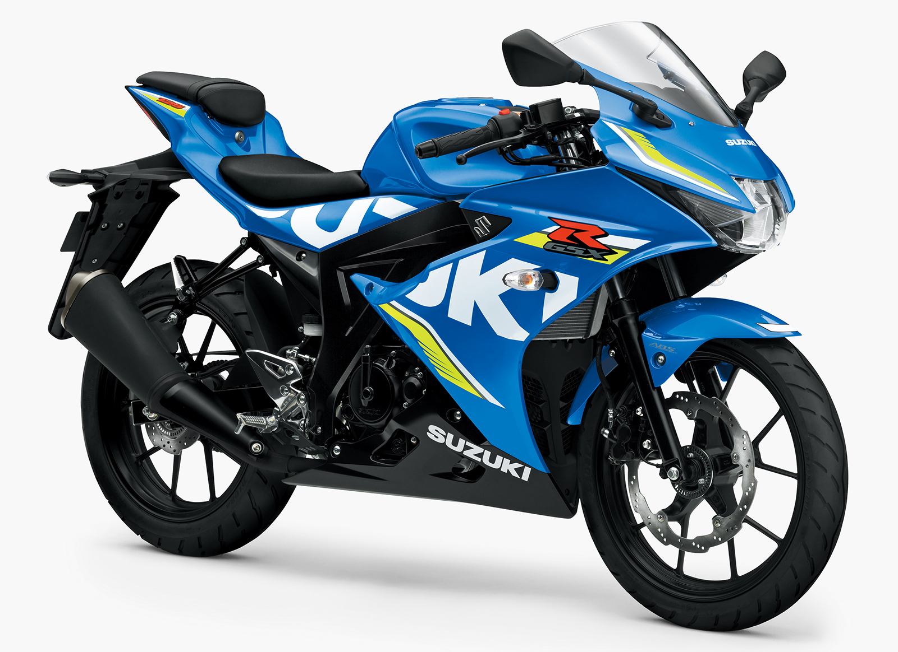

Biografi
Om meg:
Jeg ble født 25 juli 2008 på Drammen sykehus. Hele mitt liv har jeg bodd på Klokkarstua, og har trivdes der. I løpet av livet mitt har jeg hatt flere forskjellige jobber, som å klippe gress for besteforeldre og naboer. Jeg har hatt to jobber i Holmsbu, der jeg drev med oppvask på Schulestedet før, men nå jobber jeg som kokk på Cafe Juno. Jeg har også hatt to jobber for Huringen, fotballaget jeg spiller for. På den første jobben skulle jeg være trener for barneskolen etter skolen var ferdig, men når jeg be ferdig med det, fikk jeg muligheten til å jobbe som trener på et fotballag hos Huringen istedet for trener på en skole. Da jeg ble 15 år gammel, skjønte jeg at jeg hadde lyst på motorsykkel, så jeg jobbet en del for å få råd til en motorsykkel og motorsykkel lappen. Motorsykkelen min er en Suzuki GSXR 125, og har en registrert toppfart på 112 km/t
Hobbyer:
Som jeg skrev i forrige paragraf, så har jeg drevet på med fotball i 11 år, og jeg driver fortsatt med det. Dette har gitt meg mulighet for forskjellige jobber, og jeg syntes fortsatt at det er en gøy sport som jeg trives med. Jeg skrev også om motorsykkelen min, som jeg kjøpte for 30 000 kr.
